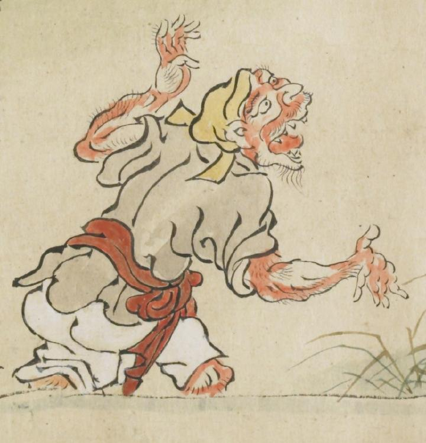

黄色い頭巾をかぶった鬼。赤い体で、大きく口を開けている。体には薄い毛が生えている。大きく腕をひろげて、何かを叫んでいる様子である。白色の衣に、赤い帯を巻いて、白い股引のようなものをはいている。
出典：親書誌：U426_nichibunken_0079：酒天童子絵巻；シュテンドウジエマキ／日付：2006／資源識別子：U426_nichibunken_0079_0001_0001
Copyright (c)2010- International Research Center for Japanese Studies, Kyoto, Japan. All rights reserved.